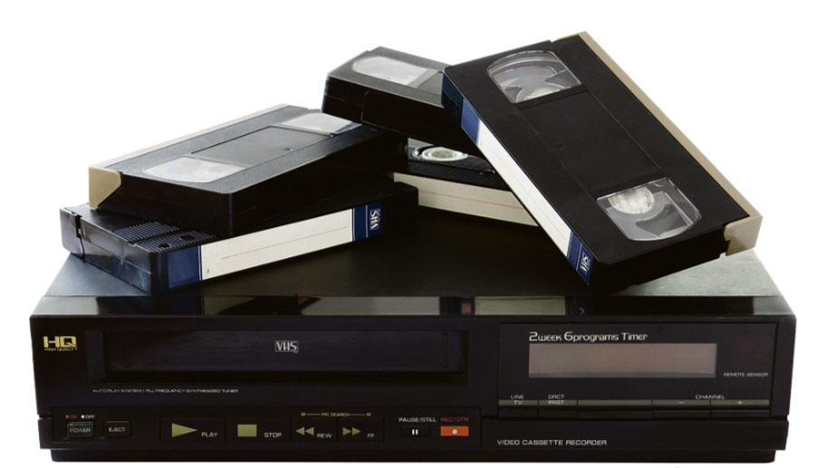
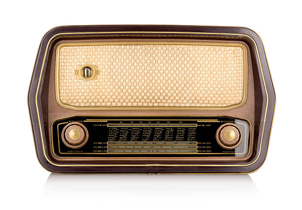
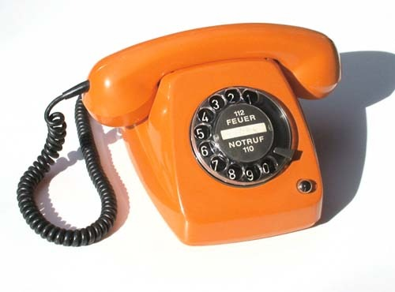
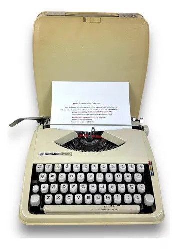

Tecnologias do passado
Vamos aprender um pouco de história através da tecnologia?

Você conhece esses objetos? Mostre essa imagem aos seus familiares mais velhos e eu aposto que eles saberão o que é!

Esse objeto é um pouco mais antigo, tenho certeza que seus avós ou bisavós já tiveram um desse em casa. Que tal perguntar para eles como funcionava?

Será que você já viu esse objeto em algum filme ou série?

E esse meio de transporte, você já viu em algum lugar? As pessoas mais velhas que você conhece, sabem o que é isso?

Esse objeto te lembra alguma coisa?
Pedagogia - FURG